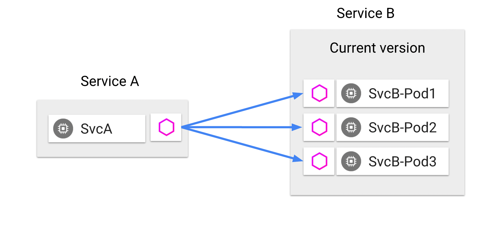

Introduction to Istio¶
Preface¶
In the Envoy lab, we explored two scenarios:
-
A single Envoy "cluster" with two endpoints.
In this scenario, we observed that a request to the proxy resulted in the load-balancing of requests across the two endpoints.
-
Two Envoy clusters, together with a routing configuration to route requests from the proxy to either cluster depending on the request's path prefix:
- Requests having the path prefix of
/onewere routed to the first cluster's/ipendpoint, and - Requests with the path prefix of
/twowere routed to the second cluster's/user-agentendpoint.
- Requests having the path prefix of
In this lab, you will learn how to model both scenarios in the context of Istio.
Envoy is a building block of Istio.
In Istio, Envoy proxies are configured indirectly, using a combination of:
- Implicit information drawn from the Kubernetes environment, and
- Istio-specific Kubernetes custom resources.
Environments¶
See options for environments.
Install Istio¶
Follow these instructions to install Istio in your environment.
Download lab artifacts¶
Use the following command to download (to a subdirectory named istio-artifacts) a copy of all yaml manifests necessary for this lab.
git clone https://github.com/tetratelabs/kubecon2022-eu-immersion-day.git && \
mv kubecon2022-eu-immersion-day/artifacts/istio ./istio-artifacts && \
rm -rf kubecon2022-eu-immersion-day
Where are the Envoys?¶
In Istio, Envoy proxy instances are present in two distinct locations:
- In the heart of the mesh: they are bundled as sidecar containers in the pods that run our workloads.
- At the edge: as standalone gateways handling ingress and egress traffic in and out of the mesh.

An ingress gateway is deployed as part of the installation of Istio. It resides in the istio-system namespace. Verify this:
To deploy Envoy as a sidecar, we will employ the convenient automatic sidecar injection, which works as follows:
-
Label the target namespace with the special label
istio-injectionwith the valueenabled:Verify:
-
When using
kubectlto apply a deployment, Istio employs a Kubernetes admission controller to augment the pod specification to bundle Envoy into a sidecar container.Verify this: observe the presence of the istio sidecar injector in your Kubernetes cluster:
Turn on Envoy access logging¶
Turn on access logging in Envoy, by applying the following Telemetry custom resource:
access-logging.yaml
This will simplify our ability to observe http requests in the mesh.
What is Telemetry resource?
The Telemetry resource is a Kubernetes custom resource that defines how the telemetry is generated for workloads within the mesh.
Scenario 1: Load-balancing across multiple endpoints¶
Deploy httpbin¶
As in the previous lab, we use httpbin as the application under test.
Istio conveniently provides httpbin as one of its sample applications.
For convenience, you will find a copy of the httpbin.yaml Kubernetes manifest in the istio-artifacts folder.
Deploy httpbin to the default namespace:
httpbin.yaml
Scale httpbin¶
Having two pods will give us the two endpoints to load-balance across.
Deploy the sleep client¶
Istio also provides a convenient sample app named sleep.
Deploy the sleep client:
sleep.yaml
Challenge¶
Observe that all pods in the default namespace each have two containers:
Can you discover the name of the sidecar container?
Hint
Describe any of the pods in the default namespace and study the Containers section.
Observe load-balancing between the two endpoints¶
Requests from sleep are load-balanced across the two httpbin endpoints.

Note
In the commands below, we capture the names of each of the two httpbin pods and of the sleep pod independently, for clarity.
-
Tail the logs of each Envoy sidecar on the receiving end.
In one terminal, run:
HTTPBIN_POD_1=$(kubectl get pod -l app=httpbin -ojsonpath='{.items[0].metadata.name}') kubectl logs --follow $HTTPBIN_POD_1 -c istio-proxyNote
Note above how the name of the container
istio-proxyis used to reference the sidecar.In a second terminal, run:
-
Make repeated calls from the
sleepcontainer to the httbin service and observe which of the twohttpbinpods receives the request.
You can stop following the logs by pressing Ctrl+C and close the first two terminal windows.
Behind the curtain¶
The Istio CLI, istioctl, provides a handy subcommand proxy-config, that will help us get at the configuration of the Envoy proxy in the sleep pod: its listeners, routes, clusters, and endpoints.
Capture the name of the sleep pod to a variable:
Envoy's listeners configuration¶
Run the following command:
The output displays a high-level overview of the Envoy listener configuration. From this output we learn that Envoy has multiple listeners, listening on multiple ports.
Some listeners handle inbound requests, for example there's a health endpoint on port 15021, and a prometheus scrape endpoint on port 15090.
The listener on port 8000 (which matches the port number of the httpbin cluster IP service) is responsible for handling requests bound to the httpbin service.
To see the full listener section of the Envoy configuration for port 8000, run:
The output is voluminous (~ 200+ lines) and that's why we piped it into the listeners.yaml file.
Note the following:
trafficDirection(at the very end of the output) is set toOUTBOUND-
The
addresssection specifies the address and port that the listener is configured for: -
The configuration contains a
filterChainsfield: -
The filter chain contains a filter named
envoy.filters.network.http_connection_manager, and its list ofhttpFiltersends with therouterfilter:
All of the above facts should match with what you learned in the Introduction to Envoy.
Routes¶
Similar to the proxy-config listener command, the high-level overview for routes is the following command:
Zero-in on the route configuration for port 8000:
The output will show the route configuration, including this section:
...
routes:
- decorator:
operation: httpbin.default.svc.cluster.local:8000/*
match:
prefix: /
name: default
route:
cluster: outbound|8000||httpbin.default.svc.cluster.local
...
The above output states that calls to the httpbin service should be routed to the cluster named outbound|8000||httpbin.default.svc.cluster.local.
Clusters¶
We can view all Envoy clusters with:
And specifically look at the configuration for the httpbin cluster with:
Endpoints¶
More importantly, we'd like to know what are the endpoints backing the httpbin cluster.
istioctl proxy-config endpoint $SLEEP_POD --cluster "outbound|8000||httpbin.default.svc.cluster.local"
Verify that the endpoint addresses from the output in fact match the pod IPs of the httpbin workloads:
Destination Rules¶
With Istio, you can apply the DestinationRule CRD (Custom Resource Definition) to configure traffic policy: the details of how clients call a service.
Specifically, you can configure:
- Load balancer settings: which load balancing algorithm to use
- Connection pool settings: for both
tcpandhttpconnections, configure the volume of connections, retries, timeouts, etc.. - Outlier detection: under what conditions to evict an unhealthy endpoints, and for how long
- TLS mode: whether a connection to an upstream service should use plain text, TLS, mutual TLS using certificates you specify, or mutual TLS using Istio-issued certificates.
Explore applying a destination rule to alter the load balancer configuration.
Did you know?
What is the default load balancing algorithm currently in play for calls to httpbin?
Visit the Istio configuration reference here to find out.
Apply the following destination rule for the httpbin service, which alters the load balancing algorithm to LEAST_CONN:
destination-rule.yaml
In Envoy, the load balancer policy is associated to a given upstream service, in Envoy's terms, it's in the "cluster" config.
Look for lbPolicy field in cluster configuration YAML output:
istioctl proxy-config cluster $SLEEP_POD --fqdn httpbin.default.svc.cluster.local -o yaml | grep lbPolicy -A 3 -B 3
Note in the output the value of lbPolicy should say LEAST_REQUEST, which is Envoy's name for Istio's LEAST_CONN setting.
Verify that the Envoy configuration was altered and that client calls now follow the "least request" algorithm.
Scenario 2: Two clusters with routing configuration¶
Scale back the httpbin deployment to a single replica:
Deploy a second httpbin service¶
The following manifest is a separate deployment of httpbin, named httpbin-2.
httpbin-2.yaml
Apply the routing configuration: VirtualService¶
If you recall, back in the Envoy lab, you wrote Envoy routing configuration involving path prefixes and rewrites.
In Istio, the routing configuration is exposed as a Kubernetes custom resource of kind VirtualService.
Study the manifest shown below:
virtual-service.yaml
It states: when making requests to the httpbin host, route the request to either the first destination (httpbin) or the second (httpbin-2), as a function of the path prefix in the request URL.
Apply the manifest:
Verify¶
Verify that requests to /one are routed to the httpbin deployment's /ip endpoint, and that requests to /two are routed to the httpbin-2 deployment's /user-agent endpoint.
-
Tail the logs of the
httpbinpod'sistio-proxycontainer: -
In a separate terminal, tail the
httpbin-2pod's logs: -
Separately, make repeated calls to the
/oneendpoint from thesleeppod: -
Likewise, make repeated calls to the
/twoendpoint from thesleeppod:
Using an Ingress Gateway¶
Rather than configure routing for internal mesh clients, it's more interesting to configure an ingress gateway.
Indeed when installing Istio, an ingress gateway was provisioned alongside istiod. Verify this:
Note that the gateway has a corresponding LoadBalancer type service:
Capture the gateway's external IP address:
GATEWAY_IP=$(kubectl get service istio-ingressgateway -n istio-system -ojsonpath='{.status.loadBalancer.ingress[0].ip}')
Visit the gateway IP address in your web browser; you should get back a "connection refused" message.
Configure the gateway¶
To expose HTTP port 80, apply the following gateway manifest:
gateway.yaml
The wildcard value for the hosts field ensures a match if the request is made directly to the "raw" gateway IP address.
Try once more to access the gateway IP address. It should no longer return "connection refused". Instead you should get a 404 (not found).
Bind the virtual service to the gateway¶
Study the following manifest:
gw-virtual-service.yaml
Note:
- The additional
gatewaysfield ensures that the virtual service binds to the ingress gateway. - The
hostsfield has been relaxed to match any request coming in through the load balancer.
Apply the manifest:
Test the endpoints¶
The raw gateway IP address will still return a 404.
However, the /one and /two endpoints should now be functional, and return the ip and user-agent responses from each httpbin deployment, respectively.
Inspect the Gateway's Envoy configuration¶
-
Review the listeners configuration.
-
Next study the routes configuration.
-
Zero-in on the routes configuration named
http.8080
It's worthwhile taking a close look at the output. Below I have removed some of the noise to highlight the most salient parts:
...
routes:
- ...
match:
...
prefix: /one
...
route:
cluster: outbound|8000||httpbin.default.svc.cluster.local
...
prefixRewrite: /ip
...
- ...
match:
...
prefix: /two
...
route:
cluster: outbound|8000||httpbin-2.default.svc.cluster.local
...
prefixRewrite: /user-agent
...
Challenge
Review the hand-written configuration from the previous lab. How does it compare to the above generated configuration?
Beyond traffic management¶
The ability to control load-balancing and routing are but one of the features of Istio.
Istio supports additional and important cross-cutting concerns, including security and observability.
Security¶
With Istio, deployed workloads are automatically assigned a unique identity.
Istio provides the PeerAuthentication CRD to control whether traffic within the mesh require mutual TLS exclusively, or whether it should be permissive.
The RequestAuthentication CRD is used to turn on parsing and validation of JWT tokens.
Workload and user identity are the the basis for authentication.
The AuthorizationPolicy CRD provides powerful mechanism for applying authorization policies based on either workload or user identity, as well as arbitrary information from the request, such as specific request headers, JWT claims, and more.
Explore observability¶
In a microservices architecture, observability is necessary to help us reason about our systems, how calls traverse our microservices, to identify bottlenecks, and more.
The services in an Istio mesh are automatically observable, without adding any burden on developers.
Deploy the Addons¶
The Istio distribution provides addons for a number of systems that together provide observability for the service mesh:
- Zipkin or Jaeger for distributed tracing
- Prometheus for metrics collection
- Grafana provides dashboards for monitoring, using Prometheus as the data source
- Kiali allows us to visualize the mesh
These addons are located in the samples/addons/ folder of the distribution.
-
Navigate to the addons directory
-
Deploy each addon:
-
Verify that the
istio-systemnamespace is now running additional workloads for each of the addons.
Generate a load¶
Recall the ingress gateway IP address from the previous section:
GATEWAY_IP=$(kubectl get service istio-ingressgateway -n istio-system -ojsonpath='{.status.loadBalancer.ingress[0].ip}')
In order to have something to observe, we need to generate a load on our system.
Explore the dashboards¶
The istioctl CLI provides convenience commands for accessing the web UIs for each dashboard.
Take a moment to review the help information for the istioctl dashboard command:
Proceed to explore each of the dashboards using the above command. Your instructor will give a demonstration of each dashboard, time permitting.
Summary¶
In comparison to having to configure Envoy proxies manually, Istio provides a mechanism to configure Envoy proxies with much less effort. It draws on information from the environment: awareness of running workloads (service discovery) provides the inputs necessary to derive Envoy's clusters and listeners configurations automatically.
Istio Custom Resource Definitions complement and complete the picture by providing mechanisms to configure routing rules, authorization policies and more.
Istio goes one step further: it dynamically reconfigures the Envoy proxies any time that services are scaled, or added to and removed from the mesh.
Istio and Envoy together provide a foundation for running microservices at scale.
In the next lab, we turn our attention to Web Assembly, a mechanism for extending and customizing the behavior of the Envoy proxies running in the mesh.